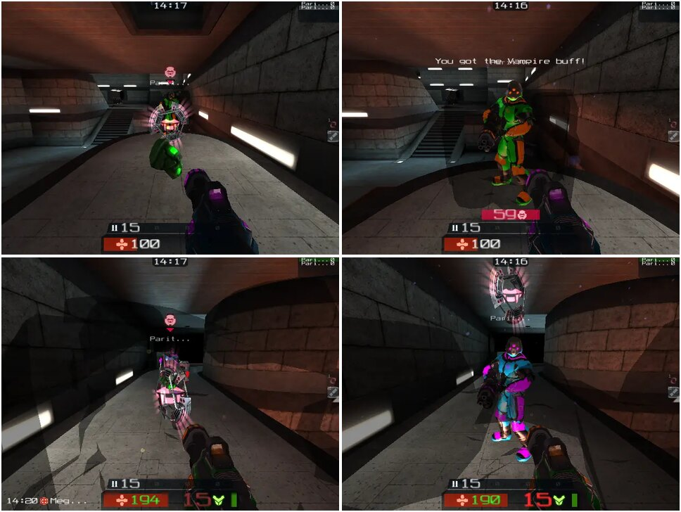
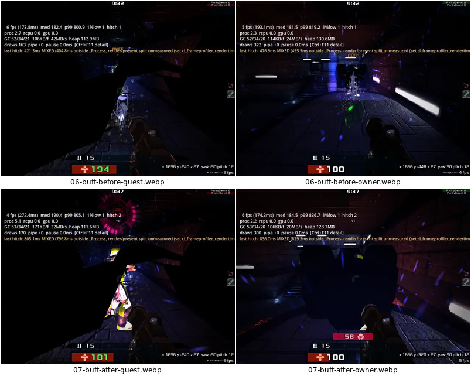

Scripted multiplayer evidence · Vortex Arena
Scripted multiplayer comparisons
Each recording uses two graphical clients on a loopback server. Each pair used matching fixture geometry. The scripts and timelines record the actions, camera positions and sampling times for each engine. Each image opens at its captured resolution.
Read the review · View or export scope decisions
Carrying a Sandbox object
On Stormkeep the owner grabs, moves and releases a prop while a guest watches. The two servers saved the prop moving under the owner’s control and returning to ordinary toss physics at its new position. Capture details
Read-only mode during a carry
A guest first tries to edit a prop owned by another player. Both games deny that action. With free editing enabled the guest can carry it. Switching the server to read-only keeps that carry active until release and prevents a new one. Capture details
Picking up the Vampire buff
Both pairs saw the same relic before pickup. After the touch, the owner gained a timed HUD indicator. The original sample showed 57 seconds. The native sample showed 91 before its clock fix and 58 afterward. After the skin fix, the guest also sees the magenta Vampire sign above the carrier. Whole-model translucency remains unverified in the Compatibility renderer. Capture details
Xonotic · owner and guest before and after pickup
Vortex Arena · after timer and relic corrections
Crylink flight and fade
A fixed observer watches another client fire across an open lane. Both captures show short-lived projectiles fading. The native repeat uses the original projectile model and omits the extra floor light. Software frame sampling limits comparisons of fade duration and brightness. Capture details
Damaging and repairing a control point
Both Onslaught servers recorded a capture. The observer then watched the captured icon take damage, recover, and return to its neutral pad after destruction. The full recordings cover each phase. Capture details
Destroying the Onslaught generator
The two shooters used the same map and an 8° downward aim. Both servers awarded the red win. Both games cut to the generator. Both native players reached the same camera and saw the extended explosion after the fix. Capture details
Counting down a player and clone
A second client watches a standing clone on Running Man CTF. Both servers logged one suicide. Native captures now show the clone’s digits from four to one and its disappearance. The scripts also recorded the player’s first-person countdown. The 50 ms stagger is below the precision of these captures. Capture details